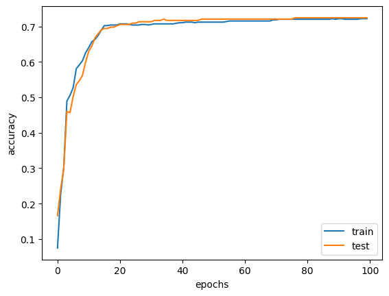
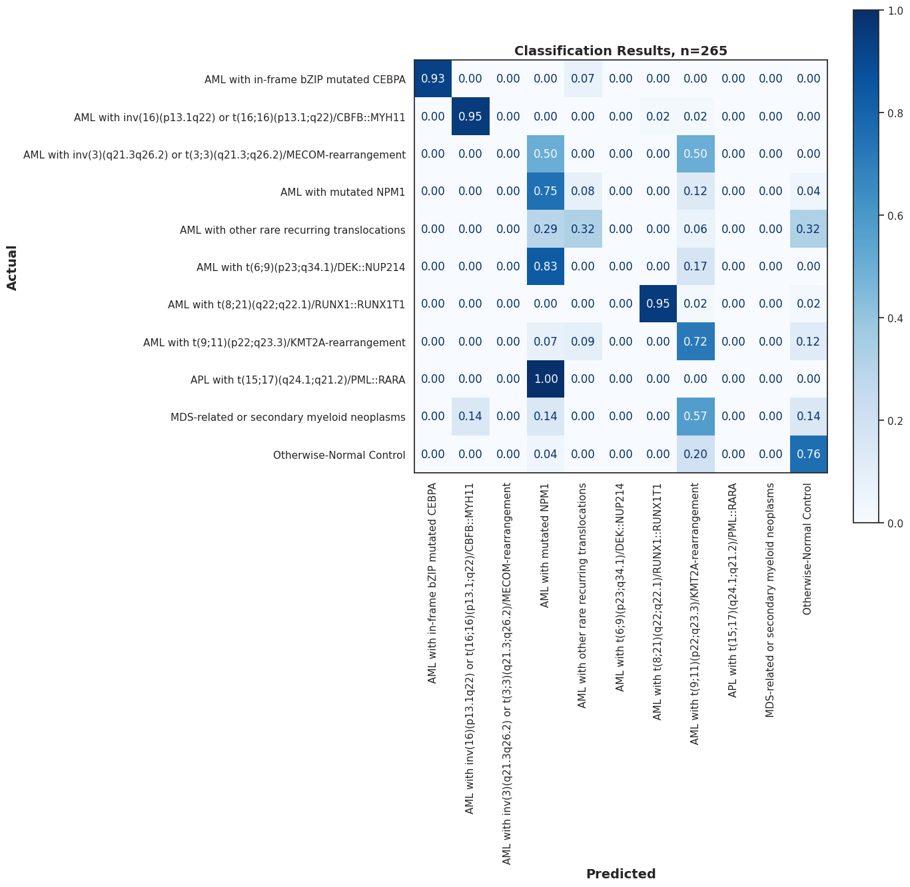

Deep Learning Benchmark#
Load data#
Show code cell source
import pandas as pd
output_path = '../Data/Processed_Data/'
df = pd.read_csv(output_path+'pacmap_output/pacmap_2d_output_peds_dx_aml.csv', index_col=0)
Preprocess data#
Exclude categories with <10 samples#
Show code cell source
# exclude the samples with mixed phenotypes and Down syndrome and t(9;22)(q34.1;q11.2)/BCR::ABL1
df = df[~df['ELN AML 2022 Diagnosis'].isin(['Mixed phenotype acute leukemia T/myeloid',
'Myeloid leukaemia associated with Down syndrome',
'AML with t(9;22)(q34.1;q11.2)/BCR::ABL1',
'APL with t(15;17)(q24.1;q21.2)/PML::RARA'])]
Show code cell source
df['ELN AML 2022 Diagnosis'].value_counts()
ELN AML 2022 Diagnosis
AML with t(9;11)(p22;q23.3)/KMT2A-rearrangement 216
AML with t(8;21)(q22;q22.1)/RUNX1::RUNX1T1 134
AML with other rare recurring translocations 128
AML with inv(16)(p13.1q22) or t(16;16)(p13.1;q22)/CBFB::MYH11 123
Otherwise-Normal Control 111
AML with mutated NPM1 88
AML with in-frame bZIP mutated CEBPA 38
AML with t(6;9)(p23;q34.1)/DEK::NUP214 22
MDS-related or secondary myeloid neoplasms 15
AML with inv(3)(q21.3q26.2) or t(3;3)(q21.3;q26.2)/MECOM-rearrangement 5
Name: count, dtype: int64
Exclude samples with missing labels#
Show code cell source
# drop the samples with missing labels for the ELN AML 2022 Diagnosis
df = df[~df['ELN AML 2022 Diagnosis'].isna()]
Define X and y#
Show code cell source
# Define X and y
X = df[['PaCMAP 1', 'PaCMAP 2']].to_numpy()
y = df['ELN AML 2022 Diagnosis'].to_numpy()
Show code cell source
# One hot encode the labels
from sklearn.preprocessing import LabelEncoder
from sklearn.preprocessing import OneHotEncoder
label_encoder = LabelEncoder()
integer_encoded = label_encoder.fit_transform(y)
onehot_encoder = OneHotEncoder(sparse_output=False)
integer_encoded = integer_encoded.reshape(len(integer_encoded), 1)
y = onehot_encoder.fit_transform(integer_encoded)
Define model architecture#
[2 inputs] -> [8 hidden neurons] -> [11 outputs]
Show code cell source
import copy
import matplotlib.pyplot as plt
import numpy as np
import pandas as pd
import torch
import torch.nn as nn
import torch.optim as optim
import tqdm
from sklearn.model_selection import train_test_split
from sklearn.preprocessing import OneHotEncoder
# convert pandas DataFrame (X) and numpy array (y) into PyTorch tensors
X = torch.tensor(X, dtype=torch.float32)
y = torch.tensor(y, dtype=torch.float32)
# split
X_train, X_test, y_train, y_test = train_test_split(X, y, train_size=0.7, shuffle=True)
class Multiclass(nn.Module):
def __init__(self):
super().__init__()
self.hidden = nn.Linear(2, 8)
self.act = nn.ReLU()
self.output = nn.Linear(8, 11)
def forward(self, x):
x = self.act(self.hidden(x))
x = self.output(x)
return x
# loss metric and optimizer
model = Multiclass()
loss_fn = nn.CrossEntropyLoss()
optimizer = optim.Adam(model.parameters(), lr=0.001)
# prepare model and training parameters
n_epochs = 100
batch_size = 5
batches_per_epoch = len(X_train) // batch_size
best_acc = - np.inf # init to negative infinity
best_weights = None
train_loss_hist = []
train_acc_hist = []
test_loss_hist = []
test_acc_hist = []
# training loop
for epoch in range(n_epochs):
epoch_loss = []
epoch_acc = []
# set model in training mode and run through each batch
model.train()
with tqdm.trange(batches_per_epoch, unit="batch", mininterval=0) as bar:
bar.set_description(f"Epoch {epoch}")
for i in bar:
# take a batch
start = i * batch_size
X_batch = X_train[start:start+batch_size]
y_batch = y_train[start:start+batch_size]
# forward pass
y_pred = model(X_batch)
loss = loss_fn(y_pred, y_batch)
# backward pass
optimizer.zero_grad()
loss.backward()
# update weights
optimizer.step()
# compute and store metrics
acc = (torch.argmax(y_pred, 1) == torch.argmax(y_batch, 1)).float().mean()
epoch_loss.append(float(loss))
epoch_acc.append(float(acc))
bar.set_postfix(
loss=float(loss),
acc=float(acc)
)
# set model in evaluation mode and run through the test set
model.eval()
y_pred = model(X_test)
ce = loss_fn(y_pred, y_test)
acc = (torch.argmax(y_pred, 1) == torch.argmax(y_test, 1)).float().mean()
ce = float(ce)
acc = float(acc)
train_loss_hist.append(np.mean(epoch_loss))
train_acc_hist.append(np.mean(epoch_acc))
test_loss_hist.append(ce)
test_acc_hist.append(acc)
if acc > best_acc:
best_acc = acc
best_weights = copy.deepcopy(model.state_dict())
print(f"Epoch {epoch} validation: Cross-entropy={ce:.2f}, Accuracy={acc*100:.1f}%")
# Restore best model
model.load_state_dict(best_weights)
Show code cell output
Epoch 0: 100%|██████████| 123/123 [00:00<00:00, 308.82batch/s, acc=0.4, loss=4.21]
Epoch 0 validation: Cross-entropy=5.02, Accuracy=16.6%
Epoch 1: 100%|██████████| 123/123 [00:00<00:00, 679.93batch/s, acc=0.4, loss=2.59]
Epoch 1 validation: Cross-entropy=3.03, Accuracy=24.2%
Epoch 2: 100%|██████████| 123/123 [00:00<00:00, 663.55batch/s, acc=0.4, loss=1.44]
Epoch 2 validation: Cross-entropy=2.02, Accuracy=29.8%
Epoch 3: 100%|██████████| 123/123 [00:00<00:00, 696.72batch/s, acc=0.8, loss=0.93]
Epoch 3 validation: Cross-entropy=1.63, Accuracy=46.0%
Epoch 4: 100%|██████████| 123/123 [00:00<00:00, 717.93batch/s, acc=0.8, loss=0.74]
Epoch 4 validation: Cross-entropy=1.45, Accuracy=45.7%
Epoch 5: 100%|██████████| 123/123 [00:00<00:00, 669.09batch/s, acc=0.8, loss=0.641]
Epoch 5 validation: Cross-entropy=1.35, Accuracy=50.2%
Epoch 6: 100%|██████████| 123/123 [00:00<00:00, 729.21batch/s, acc=0.8, loss=0.596]
Epoch 6 validation: Cross-entropy=1.30, Accuracy=53.6%
Epoch 7: 100%|██████████| 123/123 [00:00<00:00, 578.94batch/s, acc=0.8, loss=0.578]
Epoch 7 validation: Cross-entropy=1.27, Accuracy=54.7%
Epoch 8: 100%|██████████| 123/123 [00:00<00:00, 735.57batch/s, acc=0.8, loss=0.57]
Epoch 8 validation: Cross-entropy=1.24, Accuracy=56.2%
Epoch 9: 100%|██████████| 123/123 [00:00<00:00, 733.27batch/s, acc=0.8, loss=0.568]
Epoch 9 validation: Cross-entropy=1.21, Accuracy=60.0%
Epoch 10: 100%|██████████| 123/123 [00:00<00:00, 650.68batch/s, acc=0.8, loss=0.568]
Epoch 10 validation: Cross-entropy=1.19, Accuracy=63.0%
Epoch 11: 100%|██████████| 123/123 [00:00<00:00, 675.69batch/s, acc=0.8, loss=0.57]
Epoch 11 validation: Cross-entropy=1.18, Accuracy=64.5%
Epoch 12: 100%|██████████| 123/123 [00:00<00:00, 687.72batch/s, acc=0.8, loss=0.573]
Epoch 12 validation: Cross-entropy=1.16, Accuracy=66.8%
Epoch 13: 100%|██████████| 123/123 [00:00<00:00, 676.74batch/s, acc=0.8, loss=0.577]
Epoch 13 validation: Cross-entropy=1.15, Accuracy=67.9%
Epoch 14: 100%|██████████| 123/123 [00:00<00:00, 540.15batch/s, acc=0.8, loss=0.581]
Epoch 14 validation: Cross-entropy=1.14, Accuracy=69.1%
Epoch 15: 100%|██████████| 123/123 [00:00<00:00, 591.23batch/s, acc=0.8, loss=0.586]
Epoch 15 validation: Cross-entropy=1.13, Accuracy=69.4%
Epoch 16: 100%|██████████| 123/123 [00:00<00:00, 615.31batch/s, acc=0.8, loss=0.591]
Epoch 16 validation: Cross-entropy=1.12, Accuracy=69.4%
Epoch 17: 100%|██████████| 123/123 [00:00<00:00, 604.40batch/s, acc=0.8, loss=0.595]
Epoch 17 validation: Cross-entropy=1.11, Accuracy=69.8%
Epoch 18: 100%|██████████| 123/123 [00:00<00:00, 622.84batch/s, acc=0.8, loss=0.6]
Epoch 18 validation: Cross-entropy=1.10, Accuracy=69.8%
Epoch 19: 100%|██████████| 123/123 [00:00<00:00, 590.33batch/s, acc=0.8, loss=0.604]
Epoch 19 validation: Cross-entropy=1.10, Accuracy=70.2%
Epoch 20: 100%|██████████| 123/123 [00:00<00:00, 589.79batch/s, acc=0.8, loss=0.609]
Epoch 20 validation: Cross-entropy=1.09, Accuracy=70.6%
Epoch 21: 100%|██████████| 123/123 [00:00<00:00, 621.17batch/s, acc=0.8, loss=0.614]
Epoch 21 validation: Cross-entropy=1.09, Accuracy=70.6%
Epoch 22: 100%|██████████| 123/123 [00:00<00:00, 596.34batch/s, acc=0.8, loss=0.618]
Epoch 22 validation: Cross-entropy=1.08, Accuracy=70.6%
Epoch 23: 100%|██████████| 123/123 [00:00<00:00, 534.71batch/s, acc=0.6, loss=0.623]
Epoch 23 validation: Cross-entropy=1.08, Accuracy=70.6%
Epoch 24: 100%|██████████| 123/123 [00:00<00:00, 640.58batch/s, acc=0.6, loss=0.627]
Epoch 24 validation: Cross-entropy=1.07, Accuracy=70.9%
Epoch 25: 100%|██████████| 123/123 [00:00<00:00, 636.52batch/s, acc=0.6, loss=0.631]
Epoch 25 validation: Cross-entropy=1.07, Accuracy=70.9%
Epoch 26: 100%|██████████| 123/123 [00:00<00:00, 589.84batch/s, acc=0.6, loss=0.634]
Epoch 26 validation: Cross-entropy=1.07, Accuracy=71.3%
Epoch 27: 100%|██████████| 123/123 [00:00<00:00, 627.03batch/s, acc=0.6, loss=0.638]
Epoch 27 validation: Cross-entropy=1.06, Accuracy=71.3%
Epoch 28: 100%|██████████| 123/123 [00:00<00:00, 645.51batch/s, acc=0.6, loss=0.641]
Epoch 28 validation: Cross-entropy=1.06, Accuracy=71.3%
Epoch 29: 100%|██████████| 123/123 [00:00<00:00, 644.65batch/s, acc=0.6, loss=0.644]
Epoch 29 validation: Cross-entropy=1.06, Accuracy=71.3%
Epoch 30: 100%|██████████| 123/123 [00:00<00:00, 636.15batch/s, acc=0.6, loss=0.647]
Epoch 30 validation: Cross-entropy=1.05, Accuracy=71.3%
Epoch 31: 100%|██████████| 123/123 [00:00<00:00, 620.91batch/s, acc=0.6, loss=0.651]
Epoch 31 validation: Cross-entropy=1.05, Accuracy=71.7%
Epoch 32: 100%|██████████| 123/123 [00:00<00:00, 602.01batch/s, acc=0.6, loss=0.653]
Epoch 32 validation: Cross-entropy=1.05, Accuracy=71.7%
Epoch 33: 100%|██████████| 123/123 [00:00<00:00, 619.21batch/s, acc=0.6, loss=0.656]
Epoch 33 validation: Cross-entropy=1.05, Accuracy=71.7%
Epoch 34: 100%|██████████| 123/123 [00:00<00:00, 612.49batch/s, acc=0.6, loss=0.659]
Epoch 34 validation: Cross-entropy=1.05, Accuracy=72.1%
Epoch 35: 100%|██████████| 123/123 [00:00<00:00, 617.09batch/s, acc=0.6, loss=0.662]
Epoch 35 validation: Cross-entropy=1.04, Accuracy=71.7%
Epoch 36: 100%|██████████| 123/123 [00:00<00:00, 642.87batch/s, acc=0.6, loss=0.664]
Epoch 36 validation: Cross-entropy=1.04, Accuracy=71.7%
Epoch 37: 100%|██████████| 123/123 [00:00<00:00, 630.31batch/s, acc=0.6, loss=0.666]
Epoch 37 validation: Cross-entropy=1.04, Accuracy=71.7%
Epoch 38: 100%|██████████| 123/123 [00:00<00:00, 623.87batch/s, acc=0.6, loss=0.668]
Epoch 38 validation: Cross-entropy=1.04, Accuracy=71.7%
Epoch 39: 100%|██████████| 123/123 [00:00<00:00, 596.10batch/s, acc=0.6, loss=0.67]
Epoch 39 validation: Cross-entropy=1.04, Accuracy=71.7%
Epoch 40: 100%|██████████| 123/123 [00:00<00:00, 613.95batch/s, acc=0.6, loss=0.673]
Epoch 40 validation: Cross-entropy=1.04, Accuracy=71.7%
Epoch 41: 100%|██████████| 123/123 [00:00<00:00, 607.71batch/s, acc=0.6, loss=0.673]
Epoch 41 validation: Cross-entropy=1.04, Accuracy=71.7%
Epoch 42: 100%|██████████| 123/123 [00:00<00:00, 585.79batch/s, acc=0.6, loss=0.671]
Epoch 42 validation: Cross-entropy=1.04, Accuracy=71.7%
Epoch 43: 100%|██████████| 123/123 [00:00<00:00, 634.40batch/s, acc=0.6, loss=0.669]
Epoch 43 validation: Cross-entropy=1.03, Accuracy=71.7%
Epoch 44: 100%|██████████| 123/123 [00:00<00:00, 618.68batch/s, acc=0.6, loss=0.667]
Epoch 44 validation: Cross-entropy=1.03, Accuracy=71.7%
Epoch 45: 100%|██████████| 123/123 [00:00<00:00, 591.14batch/s, acc=0.6, loss=0.667]
Epoch 45 validation: Cross-entropy=1.03, Accuracy=71.7%
Epoch 46: 100%|██████████| 123/123 [00:00<00:00, 631.17batch/s, acc=0.6, loss=0.666]
Epoch 46 validation: Cross-entropy=1.03, Accuracy=72.1%
Epoch 47: 100%|██████████| 123/123 [00:00<00:00, 615.98batch/s, acc=0.6, loss=0.666]
Epoch 47 validation: Cross-entropy=1.03, Accuracy=72.1%
Epoch 48: 100%|██████████| 123/123 [00:00<00:00, 626.30batch/s, acc=0.6, loss=0.667]
Epoch 48 validation: Cross-entropy=1.03, Accuracy=72.1%
Epoch 49: 100%|██████████| 123/123 [00:00<00:00, 638.50batch/s, acc=0.6, loss=0.668]
Epoch 49 validation: Cross-entropy=1.03, Accuracy=72.1%
Epoch 50: 100%|██████████| 123/123 [00:00<00:00, 620.71batch/s, acc=0.6, loss=0.669]
Epoch 50 validation: Cross-entropy=1.03, Accuracy=72.1%
Epoch 51: 100%|██████████| 123/123 [00:00<00:00, 597.61batch/s, acc=0.6, loss=0.671]
Epoch 51 validation: Cross-entropy=1.03, Accuracy=72.1%
Epoch 52: 100%|██████████| 123/123 [00:00<00:00, 645.50batch/s, acc=0.6, loss=0.673]
Epoch 52 validation: Cross-entropy=1.03, Accuracy=72.1%
Epoch 53: 100%|██████████| 123/123 [00:00<00:00, 650.30batch/s, acc=0.6, loss=0.674]
Epoch 53 validation: Cross-entropy=1.03, Accuracy=72.1%
Epoch 54: 100%|██████████| 123/123 [00:00<00:00, 637.51batch/s, acc=0.6, loss=0.675]
Epoch 54 validation: Cross-entropy=1.03, Accuracy=72.1%
Epoch 55: 100%|██████████| 123/123 [00:00<00:00, 641.05batch/s, acc=0.6, loss=0.677]
Epoch 55 validation: Cross-entropy=1.03, Accuracy=72.1%
Epoch 56: 100%|██████████| 123/123 [00:00<00:00, 621.43batch/s, acc=0.6, loss=0.678]
Epoch 56 validation: Cross-entropy=1.03, Accuracy=72.1%
Epoch 57: 100%|██████████| 123/123 [00:00<00:00, 593.68batch/s, acc=0.6, loss=0.679]
Epoch 57 validation: Cross-entropy=1.03, Accuracy=72.1%
Epoch 58: 100%|██████████| 123/123 [00:00<00:00, 529.63batch/s, acc=0.6, loss=0.68]
Epoch 58 validation: Cross-entropy=1.03, Accuracy=72.1%
Epoch 59: 100%|██████████| 123/123 [00:00<00:00, 637.09batch/s, acc=0.6, loss=0.681]
Epoch 59 validation: Cross-entropy=1.03, Accuracy=72.1%
Epoch 60: 100%|██████████| 123/123 [00:00<00:00, 620.35batch/s, acc=0.6, loss=0.682]
Epoch 60 validation: Cross-entropy=1.03, Accuracy=72.1%
Epoch 61: 100%|██████████| 123/123 [00:00<00:00, 636.40batch/s, acc=0.6, loss=0.684]
Epoch 61 validation: Cross-entropy=1.03, Accuracy=72.1%
Epoch 62: 100%|██████████| 123/123 [00:00<00:00, 642.81batch/s, acc=0.6, loss=0.685]
Epoch 62 validation: Cross-entropy=1.03, Accuracy=72.1%
Epoch 63: 100%|██████████| 123/123 [00:00<00:00, 578.72batch/s, acc=0.6, loss=0.686]
Epoch 63 validation: Cross-entropy=1.03, Accuracy=72.1%
Epoch 64: 100%|██████████| 123/123 [00:00<00:00, 638.91batch/s, acc=0.6, loss=0.687]
Epoch 64 validation: Cross-entropy=1.03, Accuracy=72.1%
Epoch 65: 100%|██████████| 123/123 [00:00<00:00, 638.62batch/s, acc=0.6, loss=0.688]
Epoch 65 validation: Cross-entropy=1.03, Accuracy=72.1%
Epoch 66: 100%|██████████| 123/123 [00:00<00:00, 618.63batch/s, acc=0.6, loss=0.69]
Epoch 66 validation: Cross-entropy=1.03, Accuracy=72.1%
Epoch 67: 100%|██████████| 123/123 [00:00<00:00, 636.70batch/s, acc=0.6, loss=0.692]
Epoch 67 validation: Cross-entropy=1.03, Accuracy=72.1%
Epoch 68: 100%|██████████| 123/123 [00:00<00:00, 629.43batch/s, acc=0.6, loss=0.695]
Epoch 68 validation: Cross-entropy=1.03, Accuracy=72.1%
Epoch 69: 100%|██████████| 123/123 [00:00<00:00, 587.34batch/s, acc=0.6, loss=0.696]
Epoch 69 validation: Cross-entropy=1.04, Accuracy=72.1%
Epoch 70: 100%|██████████| 123/123 [00:00<00:00, 619.60batch/s, acc=0.6, loss=0.695]
Epoch 70 validation: Cross-entropy=1.04, Accuracy=72.1%
Epoch 71: 100%|██████████| 123/123 [00:00<00:00, 615.74batch/s, acc=0.6, loss=0.696]
Epoch 71 validation: Cross-entropy=1.04, Accuracy=72.1%
Epoch 72: 100%|██████████| 123/123 [00:00<00:00, 644.16batch/s, acc=0.6, loss=0.697]
Epoch 72 validation: Cross-entropy=1.04, Accuracy=72.1%
Epoch 73: 100%|██████████| 123/123 [00:00<00:00, 622.87batch/s, acc=0.6, loss=0.698]
Epoch 73 validation: Cross-entropy=1.04, Accuracy=72.1%
Epoch 74: 100%|██████████| 123/123 [00:00<00:00, 632.45batch/s, acc=0.6, loss=0.698]
Epoch 74 validation: Cross-entropy=1.04, Accuracy=72.1%
Epoch 75: 100%|██████████| 123/123 [00:00<00:00, 605.60batch/s, acc=0.6, loss=0.698]
Epoch 75 validation: Cross-entropy=1.04, Accuracy=72.1%
Epoch 76: 100%|██████████| 123/123 [00:00<00:00, 615.37batch/s, acc=0.6, loss=0.699]
Epoch 76 validation: Cross-entropy=1.04, Accuracy=72.5%
Epoch 77: 100%|██████████| 123/123 [00:00<00:00, 639.18batch/s, acc=0.6, loss=0.701]
Epoch 77 validation: Cross-entropy=1.04, Accuracy=72.5%
Epoch 78: 100%|██████████| 123/123 [00:00<00:00, 623.87batch/s, acc=0.6, loss=0.701]
Epoch 78 validation: Cross-entropy=1.04, Accuracy=72.5%
Epoch 79: 100%|██████████| 123/123 [00:00<00:00, 628.86batch/s, acc=0.6, loss=0.702]
Epoch 79 validation: Cross-entropy=1.04, Accuracy=72.5%
Epoch 80: 100%|██████████| 123/123 [00:00<00:00, 624.52batch/s, acc=0.6, loss=0.704]
Epoch 80 validation: Cross-entropy=1.04, Accuracy=72.5%
Epoch 81: 100%|██████████| 123/123 [00:00<00:00, 573.90batch/s, acc=0.6, loss=0.704]
Epoch 81 validation: Cross-entropy=1.04, Accuracy=72.5%
Epoch 82: 100%|██████████| 123/123 [00:00<00:00, 615.87batch/s, acc=0.6, loss=0.705]
Epoch 82 validation: Cross-entropy=1.04, Accuracy=72.5%
Epoch 83: 100%|██████████| 123/123 [00:00<00:00, 631.13batch/s, acc=0.6, loss=0.705]
Epoch 83 validation: Cross-entropy=1.05, Accuracy=72.5%
Epoch 84: 100%|██████████| 123/123 [00:00<00:00, 633.25batch/s, acc=0.6, loss=0.707]
Epoch 84 validation: Cross-entropy=1.05, Accuracy=72.5%
Epoch 85: 100%|██████████| 123/123 [00:00<00:00, 633.09batch/s, acc=0.6, loss=0.707]
Epoch 85 validation: Cross-entropy=1.05, Accuracy=72.5%
Epoch 86: 100%|██████████| 123/123 [00:00<00:00, 578.88batch/s, acc=0.6, loss=0.709]
Epoch 86 validation: Cross-entropy=1.05, Accuracy=72.5%
Epoch 87: 100%|██████████| 123/123 [00:00<00:00, 629.90batch/s, acc=0.6, loss=0.709]
Epoch 87 validation: Cross-entropy=1.05, Accuracy=72.5%
Epoch 88: 100%|██████████| 123/123 [00:00<00:00, 564.11batch/s, acc=0.6, loss=0.709]
Epoch 88 validation: Cross-entropy=1.05, Accuracy=72.5%
Epoch 89: 100%|██████████| 123/123 [00:00<00:00, 564.57batch/s, acc=0.6, loss=0.711]
Epoch 89 validation: Cross-entropy=1.05, Accuracy=72.5%
Epoch 90: 100%|██████████| 123/123 [00:00<00:00, 623.40batch/s, acc=0.6, loss=0.711]
Epoch 90 validation: Cross-entropy=1.05, Accuracy=72.5%
Epoch 91: 100%|██████████| 123/123 [00:00<00:00, 637.38batch/s, acc=0.6, loss=0.711]
Epoch 91 validation: Cross-entropy=1.05, Accuracy=72.5%
Epoch 92: 100%|██████████| 123/123 [00:00<00:00, 592.52batch/s, acc=0.6, loss=0.713]
Epoch 92 validation: Cross-entropy=1.05, Accuracy=72.5%
Epoch 93: 100%|██████████| 123/123 [00:00<00:00, 650.89batch/s, acc=0.6, loss=0.714]
Epoch 93 validation: Cross-entropy=1.06, Accuracy=72.5%
Epoch 94: 100%|██████████| 123/123 [00:00<00:00, 638.97batch/s, acc=0.6, loss=0.714]
Epoch 94 validation: Cross-entropy=1.06, Accuracy=72.5%
Epoch 95: 100%|██████████| 123/123 [00:00<00:00, 634.97batch/s, acc=0.6, loss=0.714]
Epoch 95 validation: Cross-entropy=1.06, Accuracy=72.5%
Epoch 96: 100%|██████████| 123/123 [00:00<00:00, 612.74batch/s, acc=0.6, loss=0.715]
Epoch 96 validation: Cross-entropy=1.06, Accuracy=72.5%
Epoch 97: 100%|██████████| 123/123 [00:00<00:00, 624.98batch/s, acc=0.6, loss=0.716]
Epoch 97 validation: Cross-entropy=1.06, Accuracy=72.5%
Epoch 98: 100%|██████████| 123/123 [00:00<00:00, 599.24batch/s, acc=0.6, loss=0.717]
Epoch 98 validation: Cross-entropy=1.06, Accuracy=72.5%
Epoch 99: 100%|██████████| 123/123 [00:00<00:00, 634.00batch/s, acc=0.6, loss=0.716]
Epoch 99 validation: Cross-entropy=1.06, Accuracy=72.5%
Show code cell source
# Plot the loss and accuracy
plt.plot(train_loss_hist, label="train")
plt.plot(test_loss_hist, label="test")
plt.xlabel("epochs")
plt.ylabel("cross entropy")
plt.legend()
plt.show()
plt.plot(train_acc_hist, label="train")
plt.plot(test_acc_hist, label="test")
plt.xlabel("epochs")
plt.ylabel("accuracy")
plt.legend()
plt.show()

Confusion Matrix#
Show code cell source
import matplotlib.pyplot as plt
import seaborn as sns
import torch
import numpy as np
from sklearn.metrics import confusion_matrix, ConfusionMatrixDisplay
def plot_confusion_matrix(model, X_test, y_test, label_encoder):
sns.set_theme(style='white')
# Make sure the model is in evaluation mode
model.eval()
# Compute the model predictions
with torch.no_grad():
y_pred = model(X_test)
y_pred = torch.argmax(y_pred, 1)
# Convert tensors to NumPy arrays for use with sklearn
y_pred = y_pred.cpu().numpy()
y_test = y_test.cpu().numpy()
cm = confusion_matrix(y_test, y_pred, normalize='true')
disp = ConfusionMatrixDisplay(confusion_matrix=cm,
display_labels=label_encoder.classes_)
disp.plot(cmap='Blues', values_format='.2f', xticks_rotation='vertical')
# Increase the size of the plot
fig = plt.gcf()
fig.set_size_inches(10, 10)
# Add title and axis names
plt.title('Classification Results, n=' + str(len(X_test)), fontsize=14, fontweight='bold')
plt.xlabel('Predicted', fontsize=14, fontweight='bold')
plt.ylabel('Actual', fontsize=14, fontweight='bold')
plt.show()
plot_confusion_matrix(model, X_test, y_test, label_encoder)
